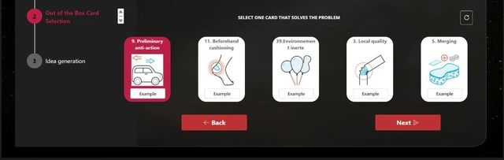
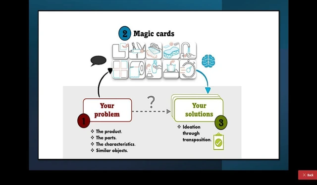

Kaizen / TRIZ chez Yazaki
Accompagner la résolution collaborative de problèmes grâce à un parcours Power Apps : définir un problème, explorer les cartes TRIZ et proposer des idées.



Le besoin
Structurer le partage des problèmes et la recherche collective de pistes d’amélioration, avec un parcours accessible aux utilisateurs métier.
Ma contribution
Participation au développement de l’application Power Apps pendant mon stage, avec centralisation des données dans SharePoint et automatisations Power Automate.
Le résultat
Un parcours applicatif illustré, de la définition du problème à la génération d’idées, intégrant les 40 principes de la méthode TRIZ.
La réalisation en pratique
- Organiser la définition d’un problème et guider l’utilisateur vers une démarche de recherche de solutions.
- Proposer des cartes issues des 40 principes TRIZ pour stimuler la génération d’idées.
- Centraliser les données et documents avec SharePoint, et accompagner le suivi par des notifications et rappels Power Automate.
Relier la méthode à un parcours concret
Pour approfondir la méthode : Explorer les 40 principes TRIZ (nouvel onglet)
Captures extraites de mon rapport de stage Yazaki. Les vues sont recadrées sur l’interface présentée.